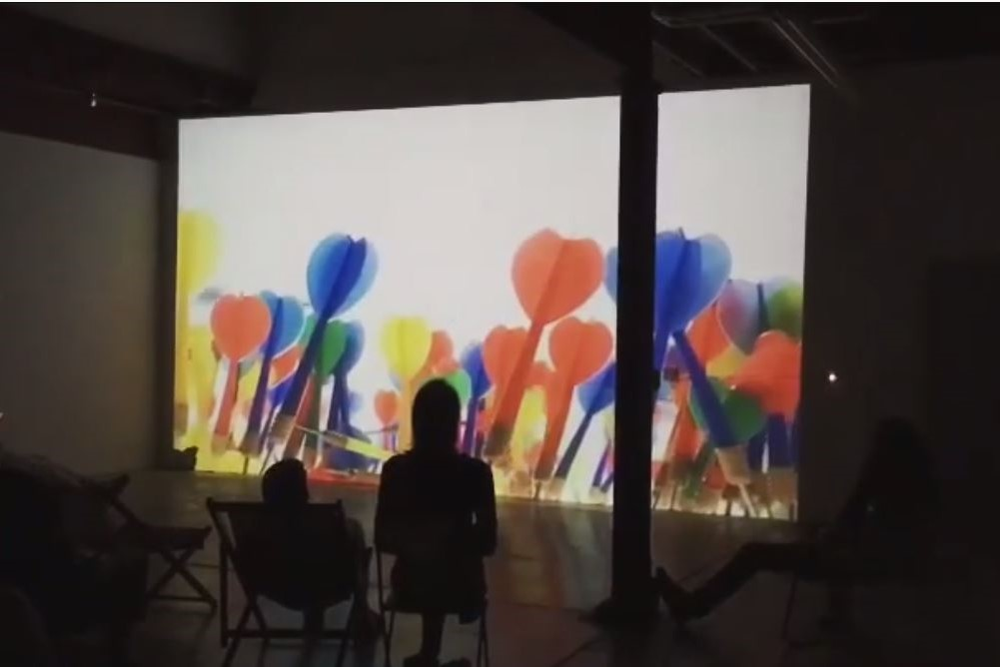
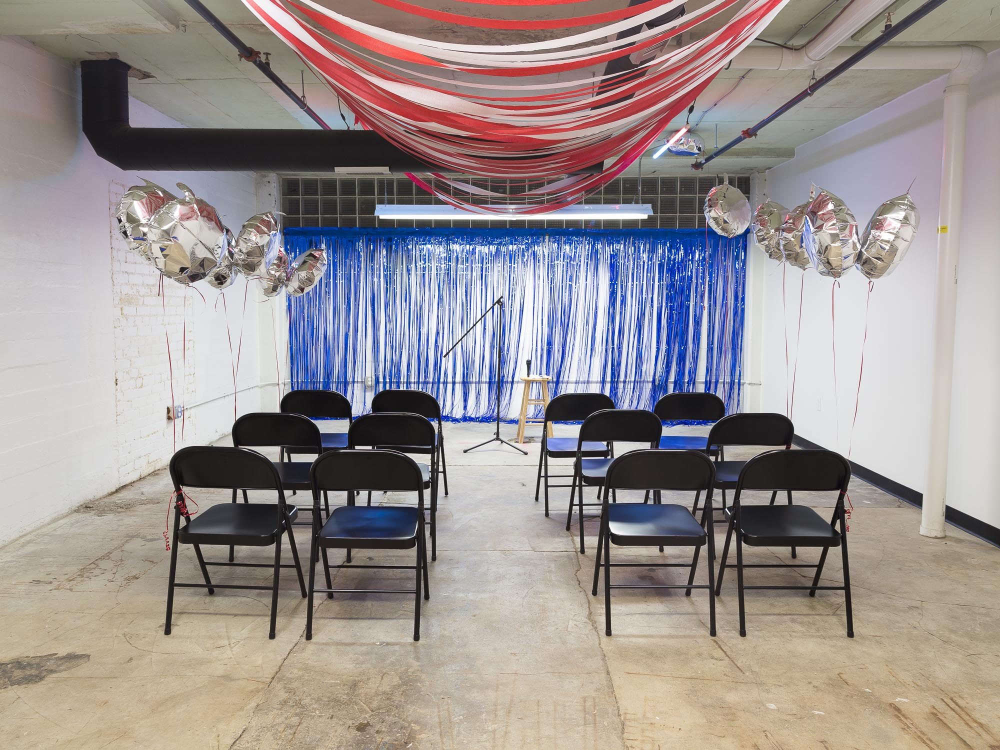
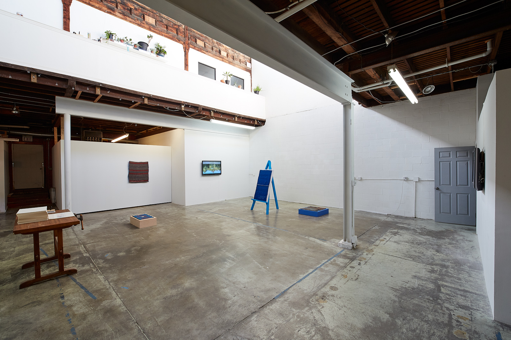

H Space + The Muted Horn
Artist-run, alternative art spaces working in partnership since 2019.
The Muted Horn Website
H Space on Instagram
Discussion with Kelley O'Brien + Eli Gfell
-
Eli Gfell, Founder of H Space
ELI: I’m Eli Gfell. I’m a multidisciplinary artist first. And I’m also a carpenter and art handler, which has very much informed my personal practice over the years, both in skills and techniques, but also materials and content too. A lot of my work deals with finding and repurposing abandoned construction material. I’m super fascinated by the contemporary built environment, particularly this phenomenon of developer modernism—this idea of using design-y elements, but produced in a way that’s almost like how you’d make an iPhone… where it’s designed so that you need to get a new one every few years. I think the way we build things as a society has become really reflective of Capitalism, and everything that’s wrong with it, be that waste and the impact on the environment, privilege and equity, and access to housing. We were talking a little earlier about flexibility and pragmatism… You know, I started working in this way in art school just because there’s this free material everywhere. And I’ve really stuck with it because I see a value to it now beyond accessibility for me—the idea that even though it’s not quality material per se, it can have some kind of second life and be recontextualized.
Regarding H Space, I always wanted a space like this to work in, but shortly after getting the space and starting to do work on it, I did see a need for more of these non-commercial and community-centered spaces in here in Cleveland. We had our first exhibition in 2016, and that was a big open-invitation group show. Over the years I’ve refined my curatorial approach a bit, but I’m definitely still very artist-focused, and that’s the core of the mission of this space. Even as we adapt around COVID, around this new expanded responsibility and accountability regarding museums and other institutions, at the heart of this space we’re trying to present the artist’s work in the way they want to present it, and not compromise that, and to facilitate that the best that we can. Which for me, usually means helping them to install the work, maybe building pedestals or anything they may need. I wanted to mention something about that—since we don’t have an operating budget or anything, these are all labor of love sort of things, but we can still be a resource in that way, in the sense that we can provide space, we can provide help with some of that practical stuff.
-

Hard Rain,Benjamin Sabatier(H Space Summer Screening, July 2017)
-
Kelley O'Brien, Co-Founder of The Muted Horn
KELLEY: I’m Kelley O’Brien, and I moved to Cleveland on Memorial Day Weekend of 2015. I had gone to grad school, graduated, traveled abroad, then came back to the U.S. like ‘what do I do with my life now?’ My collaborator at the time and I sat down and made an Excel spreadsheet of the best places in the country for young artists. We were looking at costs-per-square-foot...we knew we wanted to run a gallery, so it was really important to get some kind of cheap space. We were looking at opportunities to teach, so places with colleges that we could ideally get employed at. We were also looking for places with good funding for artists and opportunities to exhibit our work. We narrowed it down to like 8 places that weren’t New York or L.A. or Portland or Austin, places that are heavily saturated. And we decided that Cleveland was the perfect place for us! So we moved here sight unseen and searched for the ideal location that we could live and work out of. We found a warehouse space that had been converted into live-work apartments about a mile from H Space that was totally perfect for us… a big open living room/first floor area, then you have to walk through the entire house and go down this, like, compression of a stairway into the gallery space.
Once we moved here, we realized how many amazing resources and critically minded artists there are in town. We really wanted the gallery to be an opportunity to engage people from around the world with the community of Cleveland, but also to then allow Cleveland to really shine and show these international artists all the great resources we have. Because of working at a school and having resources like think[box], there were a lot of opportunities for the artists to engage with local craftsmen or use really interesting 3D printers to help them in the production of their work. For each exhibition, we would hold these dinners and ask the artists to work with us to conceptually curate a meal that related to the work that was shown in the gallery, and we would invite people from Cleveland to these dinners who we really thought would connect with the artist’s work, so to give them more of a foundation in Cleveland and more people to reach out to.
-
Forming a Partnership
KELLEY: In 2019 the space was infested with mold so we had to move out because it was no longer a place to live. it was a really wonderful opportunity to re-think the role of The Muted Horn and what it’s goals were and how perhaps there is room for collaboration with Eli and H Space as a place that was working similarly to us. The Muted Horn focused on solo shows of young emerging artists, and our job was to really help them make the best thing possible, and it seemed like H Space had some really similar ideologies.
ELI: We definitely had similar ethos and strategies for operating. Also super similar timelines, which was funny. I think that your curatorial approach is probably more focused than mine, and probably more deliberate as well. And that has worked to the benefit of the collaboration.
KELLEY: [Laughs] Well thank you. I think The Muted Horn was specifically interested in showing work that didn’t fit neatly into a box that already existed in Cleveland. If this was a show that could happen at a different artist-run space or gallery, if this was something that could happen at Forum, we didn’t want to show it. If this was a show for Hedge Gallery, it wasn’t right for us. If this was a show that could exist other places, it wasn’t a show for The Muted Horn. We were looking for art that was pushing some of the limits, things that were maybe more critical than other practices here in Cleveland. The Muted Horn was maybe more conceptually-based while the H Space was maybe more about material explorations and craft and the idea of making. I think The Muted Horn was more about research and critical conceptual thinking.
-

A War on Partying,Chelsea A. Flowers(The Muted Horn, October-December 2018)
ELI: I think that’s probably true.
KELLEY: I felt like by the two of us coming together and working, there could be some opportunities where both of our talents could really support each other’s interests. And perhaps end up with more well-rounded exhibitions that use all the resources and tools that we have collectively towards a better end-product. It was a really nice opportunity for us to think about what it might mean to think about material and concept all at once.
ELI: I really like what you said about gravitating towards things that can’t really exist in other spaces, or might not exist in other spaces. A good recent example was Matt Gallagher's show here last October. It was this really immersive sound installation. That’s really important to me—with some of the communities that exist here, like the noise scene and other things like that—to create space for really any definition of art.
KELLEY: Yeah! I think for me specifically, not coming from a traditional art background—my undergrad is in architecture and then I went to a very non-traditional graduate program. So I’ve never really taken an art class [laughs] or an art history class. So I felt that through curation, working with these artists, specifically thinking about the dinner and the meal component and how to be hospitable, there was a great opportunity for me to understand how artists work and talk about their research and creative practices. And through working closely with them, by preparing these dinners and installing these shows, I learned how they wanted their work represented. I wouldn’t have gained all those great skills, which translated to other aspects of my life, if it weren’t for sitting down with the artists and having those conversations. And really trying to think about all the ways to talk about their practice, whether it's food or experience or sound or tactile or visual. I’ve learned a lot about music and the noise scene through the exhibitions, and about different aspects of our communities, by really having to figure out how to articulate the artist’s intent.
ELI: I love what you said about hospitality, with the curated dinners, you’ve literally been hospitable for the duration of The Muted Horn’s existence. Just providing space and assistance and stuff—that’s a form of hospitality too. But I like that idea of taking it to that other level, a more intimate level. It’s still a close-knit group dinner, and there’s a lot of room there for really generative conversation and ideas. Moving forward, especially during COVID and trying to figure out how to present things in this weird new reality, and doing it safely without compromising people’s experience, the hospitality is really important there. And in a larger sense, just compassion too.
KELLEY: Yeah, I think one of the challenging things is this idea of compromise. How do you present the artist’s intent and the artist’s desired authentically while also making sure the viewers are comfortable? Whether that’s through curated meals or thinking about the health crisis at the moment. And this is really important for anyone who runs a space that’s open to the public… it’s a challenge to think about the intent of the information contained within the space, and also the community’s response and desire to see those objects. There’s a moral/ethical responsibility of curators and people who run spaces to think about the safety and security of the audience members.
ELI: Definitely.
KELLEY: And that also goes back to thinking about food security and feeding people, and the memories of food, and feeling comfortable enough in spaces to talk about art. That’s a level of security that goes beyond mask-wearing.
-

My Body, Your Body,Poppy DeltaDawn(The Muted Horn @ H Space, November 2019)
-
A Question of Necessity
LEILA: I really appreciate this discussion, especially how it relates to the ethical responsibilities and adaptability of the space. When you mentioned wanting to carve out a space for work that you wouldn’t find elsewhere, whether its experimental, interdisciplinary, critical—I got that impression from looking at all the past exhibits. When [Kelley and I] first started talking, you used the word ‘necessity’ to describe that kind of a space. Could you talk a little bit more about why critical art spaces are necessities when we’re otherwise programmed to believe that we have to profit off the work that we make?
KELLEY: I feel torn in two different directions. As an artist, I like art [laughs], I enjoy producing art and talking about art. And I can think about reasons for the necessities of art, but can I think about a necessity for The Muted Horn to exist? I’m not so sure. I enjoyed it, I thought it was a great thing to have and I loved working with the artists, and I think the artists got a lot out of it. When we first started, we had a great response from the community, and there was a lot of interest and the shows were packed. But as the years went on that kind of teetered off. And I know that also as individuals working and running artist-run spaces, you can only put so much energy into them, because you’re operating on zero dollars, sometimes even in the negatives. So each of these shows are costing you money, they’re costing the artists money… it’s a labor of love, maybe not of necessity, for both the artists involved and the curators.
Do I think it’s important to challenge the status quo or challenge the community’s expectations of art? Absolutely. We should always feel challenged in our perspectives and expectations and viewpoints and experiences. There’s this Scandinavian architect who talks about the idea of comfort as becoming unaware of your environment, and that discomfort is when you understand your environment to the fullest degree. And I think that translates to art practices, in thinking, or politics or criticism. If you only have people reaffirming your perspective, there’s no reason to change or even have a perspective. So I think it’s really important for everyone to be challenged, and to be open to people asking why. Do I think that we always respond well to those types of challenges? No. And if not done delicately or in the right way, they can detrimental, they can cause people to shut down.
I think there’s a real importance of the art scene in Cleveland being challenged by others. I think that’s the necessity… I don’t think The Muted Horn itself is a necessity or that I need to run an alternative space. But I think it’s also important for spaces to be able to think outside of Capitalism in a certain way. If we’re only producing work that sells, we’re only producing work that’s agreeable. I think you’re going to get much more interesting exhibitions and work if you take money off the table, if there’s not the intention to sell or buy the work. But I think money is also limiting, because while we’re not interested in selling any work, I think we’re also incapable of funding artists, so we can’t also get the most critical and amazing and superb work if we can’t pay the artists to produce it or travel here. It’s a double-edged sword. It allows us some kind of freedom from compromise and freedom from expectations of funders, but it also is inherently limiting in who can make the work and who can come here to exhibit, because they have to pay for some of that themselves. So they have to have money and a car. I’m not independently wealthy, so I have to work all the time, and I don’t have time to write grants so I can support these artists and pay rent on the space. So there’s a lot of challenges and there’s a lot of compromises that have to be made with all these spaces.
ELI: I think you summed that up really well. Regarding necessity, maybe it’s not necessary for specifically H Space or The Muted Horn to exist, but I think it’s absolutely necessary for alternative spaces and systems to exist. I think that’s an inherent part of society and humanism in some way, challenging systems and conventions that are in place and figuring out how else we can go about it in a way that serves our artists and serves us and serves the community.
KELLEY: Absolutely. We have state-funded institutions, we have city-funded institutions, and I think there are definitely ways in which money seems to move and change hands between these different institutions
ELI: Even nonprofits are still run like businesses, this is America, there are corporate sponsors and private donors behind everything.
KELLEY: Right… It takes passion. We’re doing this because we want to. But also with that, there’s maybe a single-mindedness behind it, like, this is YOUR space so it’s YOUR vision and that’s it. And I think that can be detrimental. Certain art spaces are run by cooperatives with multiple different people, and I think that’s really great because you’re getting all these different perspectives that are trying to come up with an idea of how to be run. I really think it’s important to have all of these different viewpoints present.
LEILA: Yes! Viewpoints and also a pooling of resources that makes the collaborative model work so well. Whether it’s the pooling of funds or skills. I agree completely.
ELI: And Cleveland’s great for that. We’re a small enough town and a close-knit enough art community that that kinda thing happens all the time. Having worked for the some of the museums and institutions locally, it even works at that level too. FRONT is an example of that, where that sort of collaborative model probably wouldn’t have worked so well in most other places, just that fact that all those venues had relationships with each other. And there are places like SPACES that actually know and give a shit about what The Muted Horn and H Space are doing too.
KELLEY: Yeah! One of the things that’s been so great about being here is that you can get the head curator of moCa to come to your artist-run space. You can get Fred Bidwell from FRONT to come. You can get the curator of photography from the CMA, a nationally renowned museum, to come to your exhibition, to come to these dinners, to speak to these artists. I think that’s been a big draw for a lot of our exhibiting artists, is that you can meet the entire arts community in one night. If you try to call the curator of MoMA in New York, good luck. Cleveland is a big enough town to have all these great things, but a small enough town where people still talk to each other. Alternate perspectives are challenged here, but also welcomed and supported in multiple different ways that aren’t necessarily financial.

Headgear, Shiraz Abdullahi Gallab (The Muted Horn, August-September 2018)
-
Accountability, Adaptability, and Moving Forward in this
Moment.
LEILA: This has been an amazing discussion and I’m appreciative to be speaking with you both. You both have equally great insight. Is there anything else you’d like to add?
ELI: I don’t have all the answers for this—but just the nature of the space and the collaboration moving forward. Something that I’m personally interested in is everything that’s happening in the museum world right now. What H Space may be able to do. Not that I think we’re implicated in the same way, but acknowledging that there are these disparities within the art world and trying to come up with a way to present or give back to the larger community instead of just art people, I guess. Or people who are already sort of invested in that.
KELLEY: That’s the challenge of all art spaces everywhere. I can walk into moCa and know everyone working there and be able to read the work on the walls and it’s not at all intimidating. I feel totally comfortable in a museum because I have a certain education around it, and I feel totally fine finding out about a random house gallery and showing up and not feeling uncomfortable. But my neighbors where The Muted Horn was, I’d invite them and they’d never come. Maybe it was the work I was showing, maybe it was the way I invited them, maybe they were just homebodies. There are so many different reasons. I think the big challenge of any art institution is how do you engage in a community in a way where they feel respected and not used, but also that they understand what you’re doing and why you’re doing it and how. How do you broaden your attendance and broaden the people who are interested beyond just us?
ELI: Especially during a time when we’re being discouraged from contact with one another and might have to cap our attendance. But I guess for me, I’m wondering what can we do as a physical space. Could we be collecting redistributing funds or food or clothing? It’s stuff that I’m considering and reckoning with, trying to figure out how we might be able to adapt moving forward.
KELLEY: Yeah and I think we kinda mentioned this in our other conversation, we were basically talking about what kind of art is necessary right now. And I think sometimes maybe the answer is no art. Maybe food is more important than art. Maybe just listening and making friends with your neighbor is more important than seeing art from New Zealand.
ELI: It’s tricky because art is a zeitgeist too, obviously, it will always have importance and relevance and it speaks to the time in which it was created. But it’s hard to think about going to see some art if you can’t pay the bills or get enough to eat. There are obviously some more immediate, practical concerns that need to be address first and I certainly wouldn’t want to do anything to detract from that.
KELLEY: I think it’s just always a juggling act. It’s always a balance of good intentions and necessary movement, and also room for freedom and expression. Maybe going and just seeing a show of some really beautiful sunsets is what you need at this moment. Just something that has nothing to do with politics.
ELI: Right, it has a therapeutic aspect too.
KELLEY: I think there’s a necessity for all of it. Any time you exist in a space you are inherently involved in that community, whether your involvement is sheer rejection or total acceptance. You’re not operating within a bubble. So I think it’s also important to read your community, which I think sometimes we do much more successfully than others, and sometimes we get it wrong. Like does my community need sunsets or an open forum? But also, what can I actually give to my community at this moment? Maybe you can’t give them an open forum because it’s unsafe. What are the other ways?
ELI: There’s a certain responsibility to be conscious of what you’re taking too, and not using those resources when they can be better served to feed somebody or house somebody. Like I wouldn’t take any donations right now for H Space, no way. Or if I did I would redistribute it somewhere else. I mean I think that’s a big part of it too, just a personal accountability.
KELLEY: It’s always a challenge to think about your responsibility, that even if you ARE doing something that’s community engaged, are you paying people for their intellectual energy to engage in this process? Are you valuing everyone’s voices equally? How are you supporting artists? To be aware of all of it at once is a huge but necessary challenge.
• • •